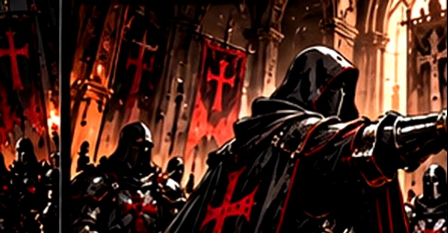
Honor
Se respeta al compañero, al rival y al botín. Nada de ninjas, nada de dramas: la palabra dada se cumple.
HonorDisciplinaVictoria
Hermandad de WoW Forever. Marchamos juntos, caemos juntos, volvemos más fuertes.
No somos una hermandad cualquiera. Somos una orden: con jerarquía, con palabra y con un estandarte que se defiende.
La Santa Inquisición nace en WoW Forever para jugadores que quieren algo más que un tag sobre la cabeza. Raids organizadas, mazmorras en grupo, PvP cuando toca y una comunidad que se conoce por su nombre.
Aquí el que entra se compromete. A cambio, nunca vuelve a hacer una mazmorra solo.
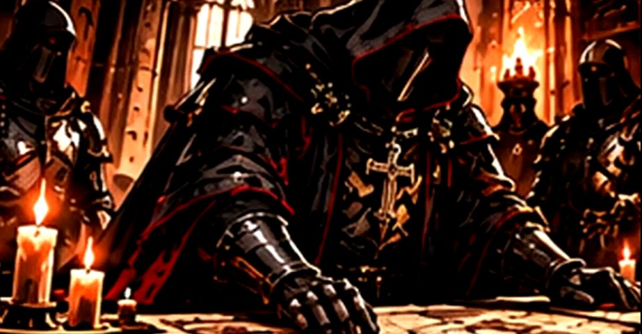
Todo miembro los pronuncia al entrar. Todo oficial responde por ellos.

Se respeta al compañero, al rival y al botín. Nada de ninjas, nada de dramas: la palabra dada se cumple.
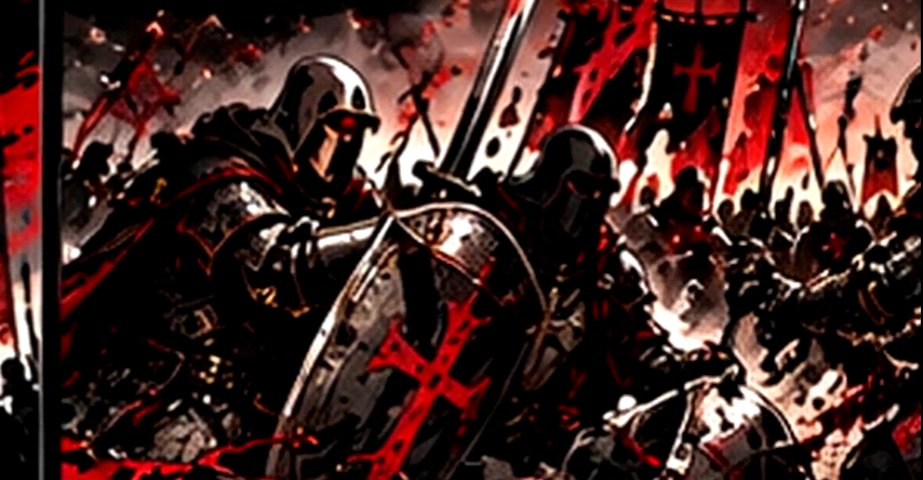
Puntualidad en la raid, consumibles preparados y tácticas leídas. El grupo avanza al ritmo del que más se esfuerza.
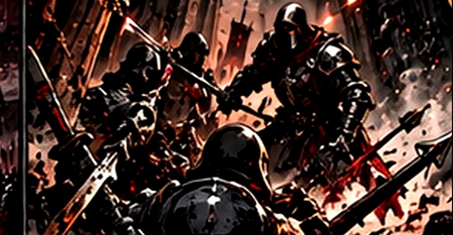
Jugamos para ganar: jefes caídos, campos de batalla tomados y progreso que se nota semana tras semana.
Estampas de la orden en marcha. Desliza para recorrerlas.
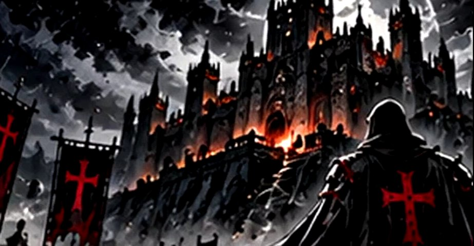
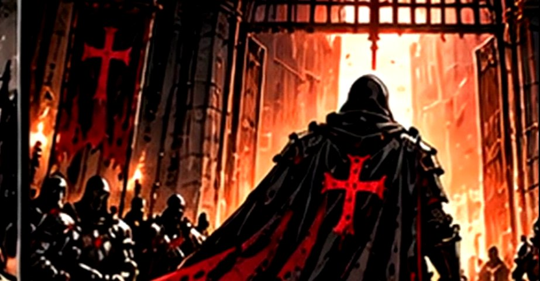
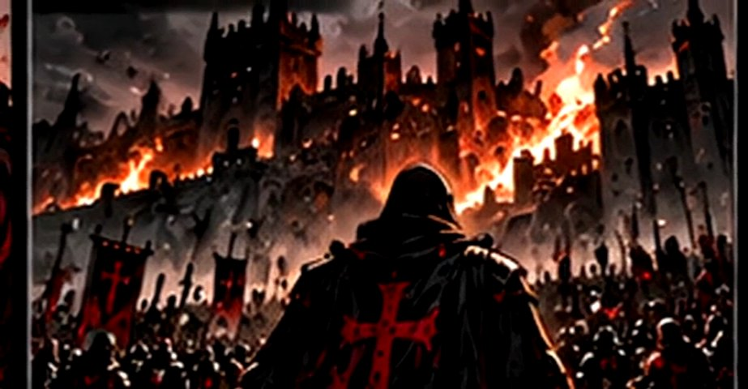
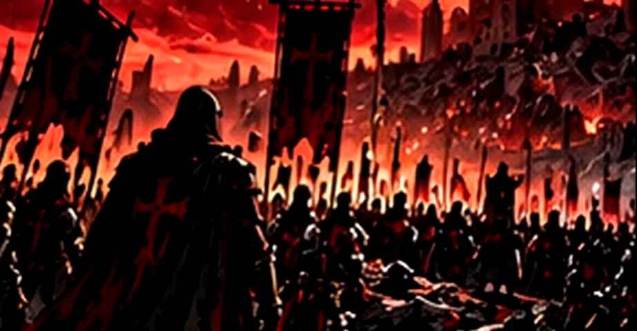
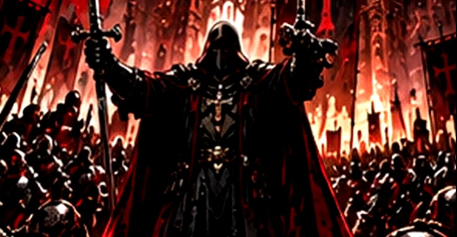
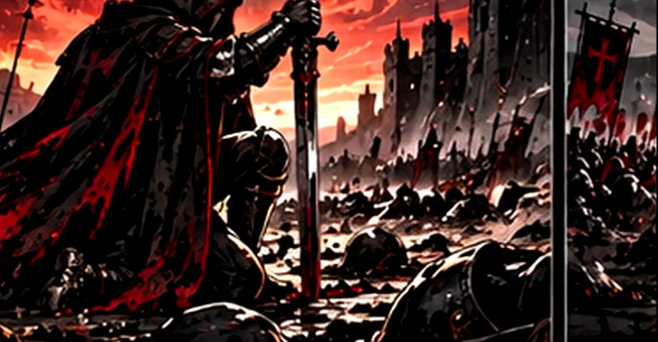
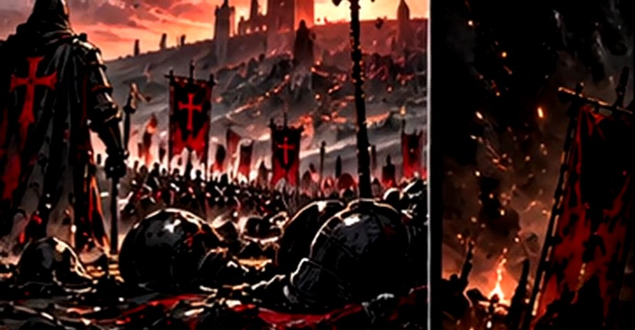
Buscamos espadas, escudos y sanadores que quieran formar parte de algo con nombre propio.
Escribe en el canal de reclutamiento y un oficial te atenderá.